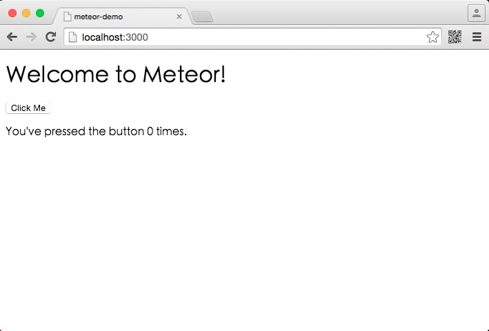
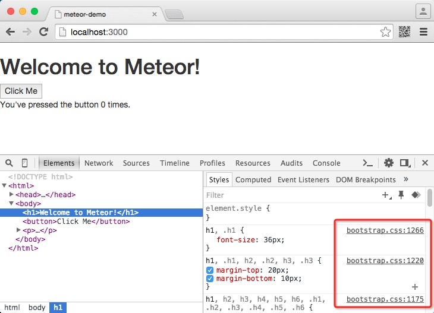
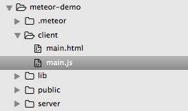

Meteor 是一个构建在 Node.js 之上的平台，用来开发实时网页程序。Meteor 位于程序数据库和用户界面之间，保持二者之间的数据同步更新。
Meteor使用
安装Meteor
在 Mac OS 下安装，输入命令：
curl https://install.meteor.com | sh
Windows 下安装，参考 Meteor 网站的安装指南。
创建应用
创建应用命令：
meteor create projectName
创建meteor-demo应用，命令执行完成后，新建 meteor-demo 文件夹，包含以下文件：
.meteor
meteor-demo.css
meteor-demo.html
meteor-demo.js
运行
进行项目目录并执行 meteor 命令：
cd meteor-demo
meteor
在浏览器中访问地址：http://localhost:3000/，即可看到如下页面：

到此，第一个Meteor应用顺利运行。
添加代码包
在项目中引入 Bootstrap 框架，添加 Underscore 代码包。Underscore 是一个 JavaScript 工具库，对于操纵 JavaScript 数据结构非常有用。
meteor add twbs:bootstrap
meteor add underscore
添加完成后，Meteor 会自动将包加载到项目中，如图：

Meteor 中的代码包有点特殊，分为五种：
- Meteor 核心代码本身分成多个核心代码包（core package），每个 Meteor 应用中都包含，你基本上不需要花费精力来维护它们。
- 常规 Meteor 代码包称为“isopack”，或同构代码包（isomorphic package，意味着它们既能在客户端也能在服务器端工作）。第一类代码包例如 accounts-ui 或 appcache 由 Meteor 核心团队维护，与 Meteor 捆绑在一起。
- 第三方代码包就是其他用户开发的 isopack 上传到 Meteor 的代码包服务器上。你可以访问 Atmosphere 或 meteor search 命令来浏览这些代码包。
- 本地代码包（local package）是自己开发的代码包，保存在 /packages 文件夹中。
- NPM 代码包（NPM package）是 Node.js 的代码包，虽不能直接用于 Meteor，但可以在上述几种代码包中使用。
Meteor 应用的文件结构
请在 meteor-demo 文件夹中新建四个子文件夹：/client，/server，/public 和 /lib。然后在 /client 文件夹中新建两个空文件：main.html 和 main.js。
结构图如下：

Meteor 文件规则：
- 在 /server 文件夹中的代码只会在服务器端运行。
- 在 /client 文件夹中的代码只会在客户端运行。
- 其它代码则将同时运行于服务器端和客户端上。
- 请将所有的静态文件（字体，图片等）放置在 /public 文件夹中。
Meteor 文件加载顺序：
- 在 /lib 文件夹中的文件将被优先载入。
- 所有以 main.* 命名的文件将在其他文件载入后载入。
- 其他文件以文件名的字母顺序载入。
需要注意的是，即便 Meteor 包含上述规则，这并不意味着它强制你为你的 Meteor 应用采用任何预设的文件结构。上述结构只是我们的建议，并不是一成不变的。
更多请参阅 Meteor 官方文档;